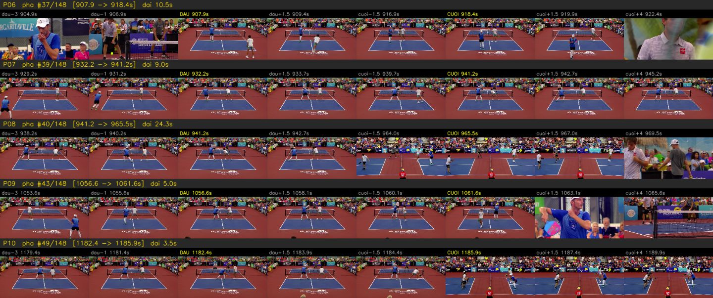
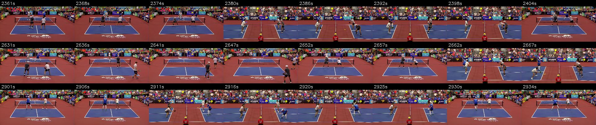
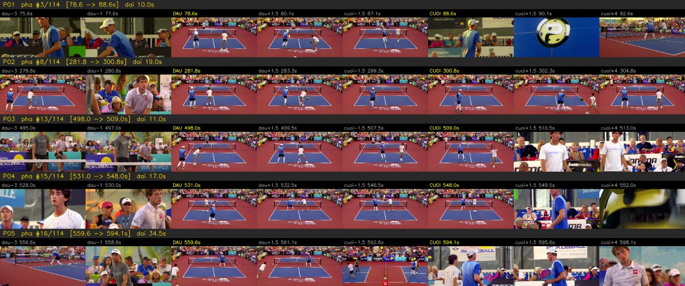

QC video highlight trận 67 phút: lỗi ở đâu, sửa được bao nhiêu, độ chính xác còn lại
QC · 11/11/2026 · nhánh qc/rally-highlights-review (đã merge origin/rally-highlight tới 2051548) · trận youtube.com/watch?v=pthJ1IQPqGE
Yêu cầu: highlight của trận 67 phút dài ~28 phút (41% thời lượng gốc) — quá dài để xem hết. Tìm chỗ sai, thống kê, xem sửa được không; không sửa được thì báo độ chính xác.
1. Kết luận
| Trước sửa (mặc định cũ) | Sau sửa (mặc định mới gap=5, pre=3) |
|
|---|---|---|
| Mẫu kiểm | 30 pha + 15 khoảng bị loại (seed 7) | mẫu độc lập 20 pha + 10 khoảng (seed 11) |
| Pha đúng hoàn toàn | 10/30 = 33% (±17%) | 14/20 = 70% (±20%); 14/17 = 82% nếu bỏ 3 ca ảnh tĩnh không phân xử được |
| Pha có lỗi rõ ràng | 19/30 = 63%, 6 loại lỗi | 3/20 = 15%, chỉ còn 1 loại (cắt đuôi) |
| Khoảng bị loại đúng | 13/15 = 87% (2 sót pha) | 9/10 = 90% (0 sót rõ, 1 không rõ) |
| Highlight | 148 pha · 27,7 phút (41%) | 114 pha · 32,2 phút (48%) |
Sửa được phần lớn: chỉ bằng hai tham số, lỗi rõ ràng giảm từ 63% xuống 15%, không làm hỏng mẫu đúng nào, đổi lại highlight dài thêm 4,5 phút. Phần còn lại không sửa được bằng tham số (mục 5). Độ dài highlight nên điều khiển bằng ngân sách chọn pha, không phải bằng cách cắt pha: trên trận này bản 25% = 41 pha / 16,7 phút, bản 10% = 13 pha / 6,7 phút — mỗi pha vẫn trọn.
2. Cách QC không cần xem hết 28 phút
Lỗi của bộ tách pha nằm ở mốc cắt, không nằm giữa pha. Vì vậy lấy mẫu ngẫu nhiên có hạt giống cố định và chỉ soi quanh các mốc (reports/qc/qc_highlight_mau.py):
- Mỗi pha một hàng 8 khung: đầu−3s, đầu−1s, ĐẦU, đầu+1,5s | cuối−1,5s, CUỐI, cuối+1,5s, cuối+4s.
- Mỗi khoảng bị loại (≥ 4 s) 4 khung ở 15/38/62/85% — để bắt pha bị sót.
- Người QC gán nhãn từ bảng nhãn cố định; số liệu tính bằng
--thong-ke, khoảng tin cậy 95% theo xấp xỉ chuẩn. - Pha dài nghi gộp nhầm (> 35 s) được soi thêm 8 khung giữa pha.
| Nhãn | Nghĩa |
|---|---|
DUNG |
có cú giao bóng ở đầu, điểm đã kết thúc ở cuối |
TRE_GIAO |
pha còn nguyên nhưng bắt đầu trễ ~1 s, mất động tác giao bóng |
CAT_DAU |
lúc bắt đầu bóng đã đang bay |
CAT_DUOI |
sau mốc cuối vẫn đang đánh |
CAT_HAI_DAU |
mảnh vụn giữa pha |
TACH_DOI |
nửa sau của một pha bị chặt đôi (bắt đầu đúng mốc cuối của pha trước — hình liền nhưng đếm thừa) |
KHONG_PHAI_PHA |
nghỉ giữa điểm / cận mặt / replay bị nhận là pha |
LOAI_DUNG / SOT_PHA |
khoảng bị loại đúng / đang có giao tranh mà bị loại |
KHONG_RO |
ảnh tĩnh không đủ phân xử (vd. đang đánh hay replay) |
Ảnh mẫu (trước sửa): P07 + P08 là một pha bị chặt đôi tại 941,2 s; P10 là mảnh 3,5 s giữa pha.

3. Trước sửa: lỗi nào, bao nhiêu (seed 7, 30 pha + 15 khoảng)
| Nhãn | Số | Tỷ lệ |
|---|---|---|
DUNG |
10 | 33% |
CAT_DUOI |
6 | 20% |
CAT_DAU |
4 | 13% |
TRE_GIAO |
3 | 10% |
TACH_DOI |
3 | 10% |
CAT_HAI_DAU |
2 | 7% |
KHONG_PHAI_PHA |
1 | 3% |
KHONG_RO |
1 | 3% |
khoảng: LOAI_DUNG / SOT_PHA |
13 / 2 | 87% / 13% |
Quan sát: các "pha" ≤ 5 s gần như đều là mảnh vụn; các pha chặt đôi đều rơi vào pha hay nhất (khán giả "ồ" giữa pha).
4. Nguyên nhân gốc: cổng âm thanh chập chờn
Trận này có bình luận viên nói trong lúc đánh, nên ngưỡng "khán giả im" (Otsu trên âm lượng cả trận) tụt xuống −31,5 dBFS — chỉ những tích tắc rất lặng mới được tính là đang chơi. Ví dụ khoảng bị loại K01 (71–113 s): camera sân đạt suốt (điểm khớp 0,91–0,93 > ngưỡng 0,67) nhưng âm lượng −22…−25 dBFS, chỉ 2 mẫu lọt dưới ngưỡng. Chuỗi "đang chơi" vì thế bật/tắt liên tục; với lấp lỗ chỉ 1 s, mỗi lần tắt > 1 s là một nhát cắt — sinh ra đủ cả CAT_DAU, CAT_DUOI, TACH_DOI, CAT_HAI_DAU. Còn TRE_GIAO do đệm trước 1 s ngắn hơn khoảng từ lúc camera sân lên hình tới cú giao.
5. Thử phương án sửa trên chính các mẫu lỗi
Mỗi mẫu lỗi có một "điểm cắt" cụ thể; phương án vá khi điểm đó nằm gọn trong một đoạn (có lề 1–2 s), hỏng khi mẫu DUNG bị tách hoặc khoảng LOAI_DUNG bị phủ ở khung giữa (reports/qc/qc_highlight_sua.py, dữ liệu data/qc67_phuong_an_sua.csv):
| Phương án | Vá | Hỏng | Số đoạn | Phút |
|---|---|---|---|---|
| A cũ (lấp 1 s, đệm 1 s) | 0/21 | 0/23 | 148 | 27,7 |
| B lấp 3 s | 11/21 | 0/23 | 125 | 29,8 |
| C lấp 5 s | 14/21 | 0/23 | 114 | 31,0 |
| D chỉ camera sân | 18/21 | 5/23 | 124 | 42,4 |
| E camera sân + có ≥ 1,5 s im | 18/21 | 2/23 | 114 | 36,4 |
| F đã chọn: lấp 5 s, đệm 3 s | 17/21 | 0/23 | 114 | 32,2 |
Quét gap 4–10 s × pre 1–3 s: vùng gap 4–5 s là vùng phẳng không hỏng; từ gap 6 s bắt đầu gộp nhầm điểm khác (hỏng 1 → 7, đoạn dài tới 162 s). Đã đổi mặc định của detect_rallies thành gap=5, pre=3 (kèm test test_mid_rally_noise_no_longer_splits_the_rally; các test cơ chế cũ ghim tham số cũ). Lưu ý: 17/21 là số trong mẫu dùng để chọn — số độ chính xác thật lấy từ mẫu độc lập ở mục 6.
6. Sau sửa: mẫu độc lập (seed 11, 20 pha + 10 khoảng)
| Nhãn | Số | Tỷ lệ |
|---|---|---|
DUNG |
14 | 70% |
CAT_DUOI |
3 | 15% |
KHONG_RO |
3 | 15% |
khoảng: LOAI_DUNG / KHONG_RO |
9 / 1 | 90% / 10% |
Năm trên sáu loại lỗi không còn xuất hiện. Ví dụ: P03 cũ (trễ giao) nay bắt đầu đúng khung giao bóng 498,0 s; mảnh 2,8 s cũ (P16) nay liền thành pha 12,5 s; vùng K01 cũ (sót) nay được phủ. Rủi ro mới của lấp lỗ dài là gộp nhầm hai điểm — đã soi giữa ba pha dài nhất (49 s, 42 s, 39 s): giao tranh liên tục, luân phiên camera chính ↔ camera hông, không có cảnh nghỉ:


Kiểm chéo trên video 11 phút (PMRSb3ogWq4, cũng có BLV): mặc định mới nối ba mảnh 94,5 → 98,2 → 105,5 → 116 s thành một pha; chế độ âm thanh nay cho 19 pha / 8,3 phút, không còn cần chế độ "chỉ camera sân" làm lối thoát.
7. Phần không sửa được bằng tham số (độ chính xác còn lại ≈ 70–82% pha đúng)
| Lỗi còn lại | Ví dụ | Vì sao tham số không cứu | Cần gì |
|---|---|---|---|
| Cắt đuôi khi pha kết thúc trong tiếng ồn (giao tranh hấp dẫn ở bếp, khán giả la to trước khi hết điểm) | P11, P15, P16 (sau sửa) | âm thanh đã ồn > 5 s trước khi hết điểm | tín hiệu chuyển động/bóng: kéo dài pha khi camera sân còn và cầu thủ còn di chuyển |
| Giao tranh thật quay bằng camera hông | K06 (trước sửa) | camera hông dùng cho cả live lẫn replay; điểm khớp 0,57–0,61 dưới ngưỡng | nhận diện replay bằng hiệu ứng chuyển cảnh quả bóng "?" (replay luôn kẹp giữa hai hiệu ứng này) |
| Nghỉ giữa điểm mà khán giả im | P24 (trước sửa) | âm thanh và camera đều "đúng" | chuyển động/bóng |
| Chuyển zoom mờ giữa pha | video 11 phút, 57,5 s | điểm khớp khuôn rơi 0,62 vài giây | bám khuôn có bù tỷ lệ (việc mở V5) |
8. Giới hạn của đợt QC
- Một trận, một người gán nhãn (agent QC), từ ảnh tĩnh — ca nào ảnh tĩnh không phân xử được đều ghi
KHONG_ROchứ không đoán; độ chính xác báo cả hai cách tính (tínhKHONG_ROlà sai / bỏ ra). - Cỡ mẫu nhỏ: khoảng tin cậy ±17–20%. Hướng tiếp: người thứ hai gán nhãn độc lập cùng các tấm ảnh (seed cố định nên ai chạy cũng ra đúng mẫu) để đo độ đồng thuận.
- Ảnh trong app của anh Công Anh (158 pha / 28:56) là bản chưa có hysteresis; bản QC (148 / 27,7 phút) có — cùng hệ, chênh 6%.
9. Chạy lại
# phân tích trận (≈ 6 phút trên CPU, 1080p)
.venv/bin/python -c "from core import analyze; analyze('video_thu_nghiem/match2.mp4','runs/match67_v2/analysis')"
# mẫu trước sửa (nhãn ở data/qc67_truoc_nhan.csv) — dùng mặc định cũ khi sinh ảnh:
# git checkout 025ff72 -- core.py rồi chạy lệnh dưới, xong khôi phục core.py
.venv/bin/python reports/qc/qc_highlight_mau.py video_thu_nghiem/match2.mp4 runs/match67_v2/analysis runs/qc_mau audio 30 15 7
# mẫu sau sửa (mặc định mới)
.venv/bin/python reports/qc/qc_highlight_mau.py video_thu_nghiem/match2.mp4 runs/match67_v2/analysis runs/qc_mau_sau audio 20 10 11
# thống kê và bảng phương án
.venv/bin/python reports/qc/qc_highlight_mau.py --thong-ke reports/qc/data/qc67_truoc_nhan.csv
.venv/bin/python reports/qc/qc_highlight_mau.py --thong-ke reports/qc/data/qc67_sau_nhan.csv
.venv/bin/python reports/qc/qc_highlight_sua.py runs/match67_v2/analysis reports/qc/data/qc67_truoc_nhan.csv